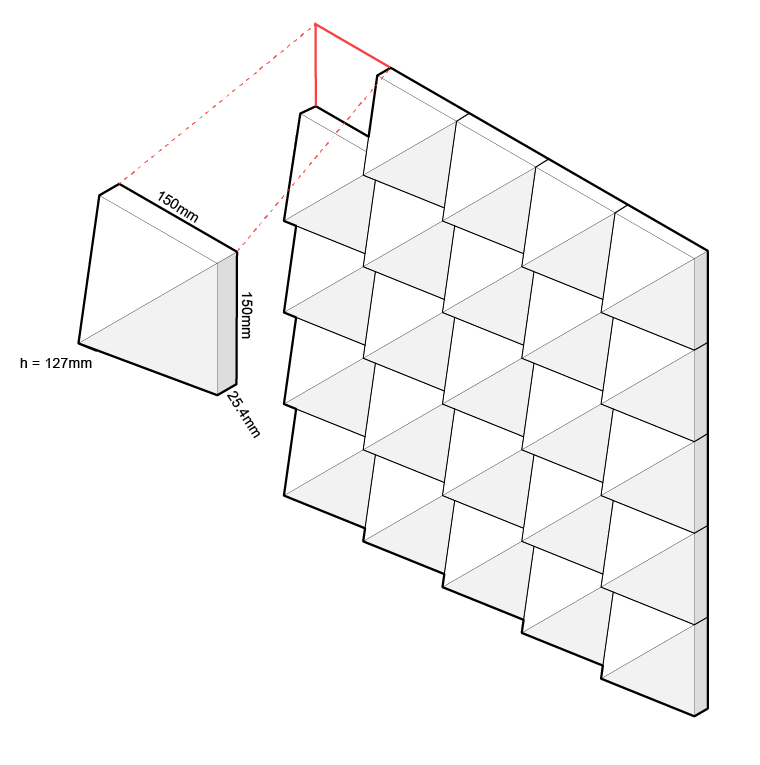
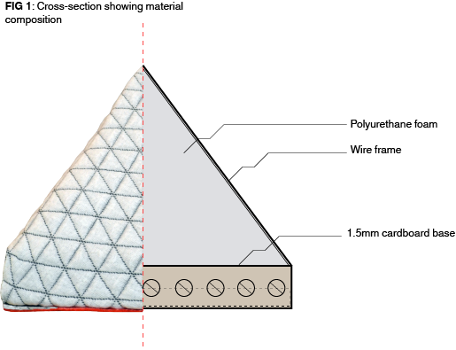

TETRA Sound Insulating System - MAKO Invent 2016
Top 8 Finalist - Prototype Presentation
Deena and I participated in this year's MAKO Invent competition. Our product, the prototype of which can be seen here, was chosen out of 50+ entries to move on the final round. TETRA is a 100% non-destructive, cheap, and aesthetically pleasing way for apartment renters to decrease noise penetration through walls and ceilings. We plan on taking the product to market via Ryerson's many entrepreneurial incubators in the coming years.

Dimensions and example configuration

Basic materiality and structure